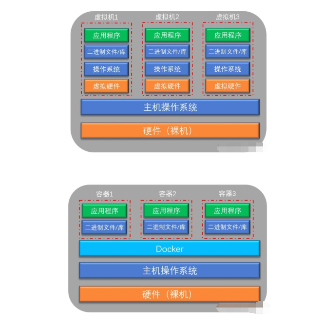
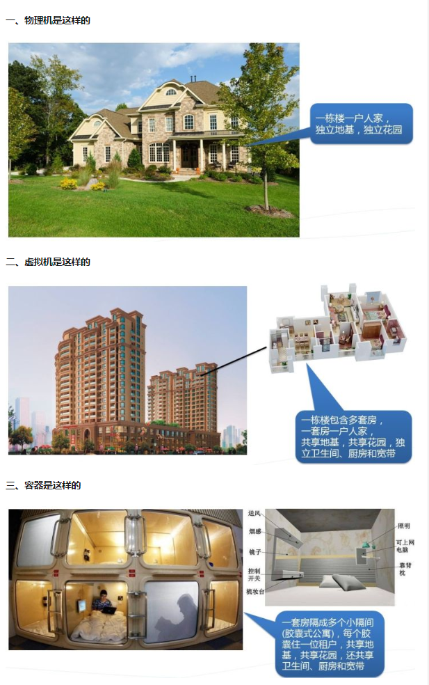
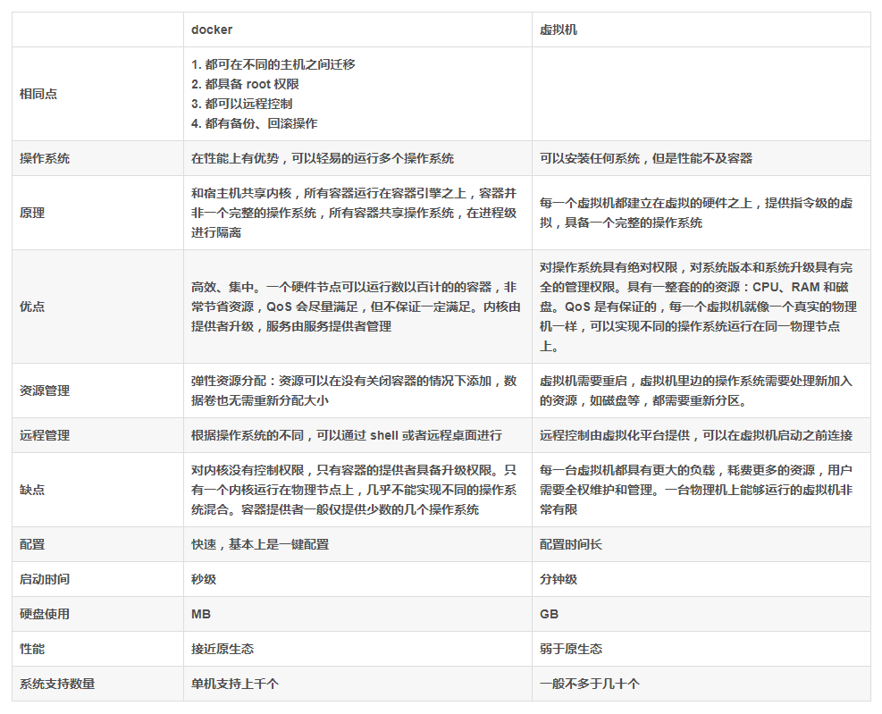
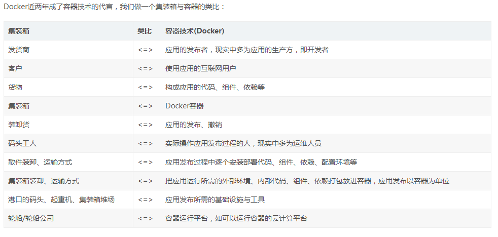
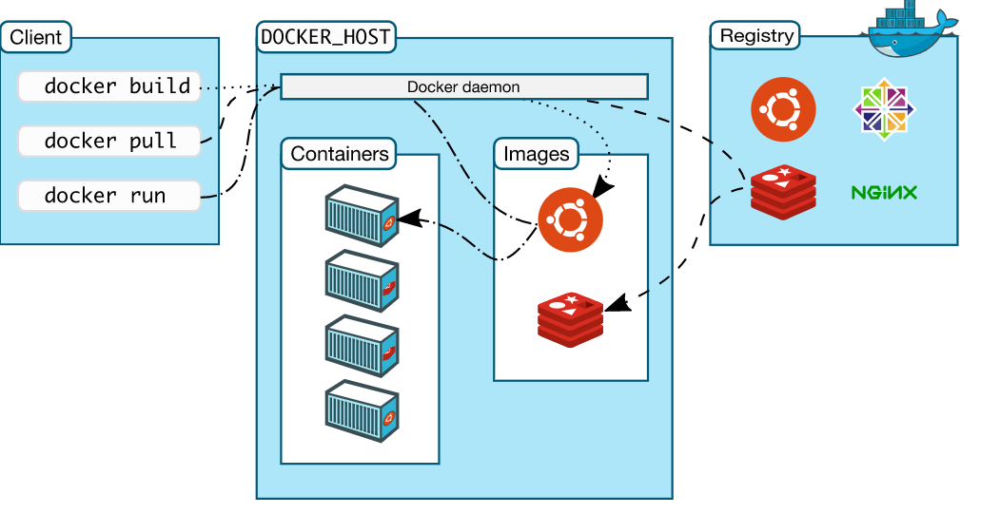
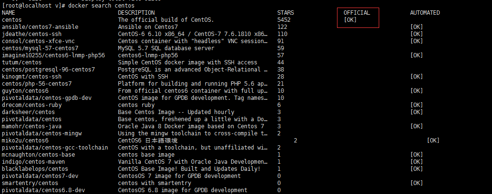

0.docker
Docker 分为 CE 和 EE 两大版本。CE 即社区版（免费，支持周期 7 个月），EE 即企业版，强调安全，付费使用，支持周期 24 个月。
Docker CE 分为 stable, test, 和 nightly 三个更新频道。每六个月发布一个 stable 版本 (18.09, 19.03, 19.09…)。
-
安装
官方网站上有各种环境下的 安装指南
-
与传统虚拟机的区别



1.基本概念
1.0 集装箱对容器技术(Docker)的启发


1.1 镜像
对于 Linux 而言，内核启动后，会挂载 root 文件系统为其提供用户空间支持。而 Docker 镜像（Image），就相当于是一个 root 文件系统。比如官方镜像 ubuntu:18.04 就包含了完整的一套 Ubuntu 18.04 最小系统的 root 文件系统。
镜像构建时，会一层层构建，前一层是后一层的基础。每一层构建完就不会再发生改变，后一层上的任何改变只发生在自己这一层。比如，删除前一层文件的操作，实际不是真的删除前一层的文件，而是仅在当前层标记为该文件已删除。在最终容器运行的时候，虽然不会看到这个文件，但是实际上该文件会一直跟随镜像。因此，在构建镜像的时候，需要额外小心，每一层尽量只包含该层需要添加的东西，任何额外的东西应该在该层构建结束前清理掉。
1.2容器
镜像（Image）和容器（Container）的关系，就像是面向对象程序设计中的 类 和 实例 一样，镜像是静态的定义，容器是镜像运行时的实体 容器的实质是进程，但与直接在宿主执行的进程不同，容器进程运行于属于自己的独立的 命名空间
每一个容器运行时，是以镜像为基础层，在其上创建一个当前容器的存储层，我们可以称这个为容器运行时读写而准备的存储层为 容器存储层。 容器不应该向其存储层内写入任何数据，容器存储层要保持无状态化。所有的文件写入操作，都应该使用 数据卷（Volume）、或者绑定宿主目录，在这些位置的读写会跳过容器存储层，直接对宿主（或网络存储）发生读写，其性能和稳定性更高
数据卷的生存周期独立于容器，容器消亡，数据卷不会消亡。因此，使用数据卷后，容器删除或者重新运行之后，数据却不会丢失。
1.3仓库
一个 Docker Registry 中可以包含多个 仓库（Repository）；每个仓库可以包含多个 标签（Tag）；每个标签对应一个镜像。
通常，一个仓库会包含同一个软件不同版本的镜像，而标签就常用于对应该软件的各个版本。我们可以通过 <仓库名>:<标签> 的格式来指定具体是这个软件哪个版本的镜像。如果不给出标签，将以 latest 作为默认标签。
以 Ubuntu 镜像 为例，ubuntu 是仓库的名字，其内包含有不同的版本标签，如，16.04, 18.04。我们可以通过 ubuntu:16.04，或者 ubuntu:18.04 来具体指定所需哪个版本的镜像。如果忽略了标签，比如 ubuntu，那将视为 ubuntu:latest。
仓库名经常以 两段式路径 形式出现，比如 jwilder/nginx-proxy，前者往往意味着 Docker Registry 多用户环境下的用户名，后者则往往是对应的软件名。但这并非绝对，取决于所使用的具体 Docker Registry 的软件或服务。
Docker Registry 公开服务
私有 Docker Registry
2.docker 核心模块

核心功能简答介绍:
Docker是C/S模式
images：docker镜像，是Docker run的原材料
container: Docker运行的内容，是独立存在的
data volumes: 通过数据挂载的方式，实现数据共享
network：用户容器与外部、容器之间的通信，常用的方法有端口映射、link等
3.docker 使用流程

4.基本命令的使用技巧
docker 参数 –help 可以查看调用的参数的格式
##容器相关操作的命令
docker container --help
Commands:
attach Attach local standard input, output, and error streams to a running container
commit Create a new image from a container's changes
cp Copy files/folders between a container and the local filesystem
create Create a new container
diff Inspect changes to files or directories on a container's filesystem
exec Run a command in a running container
export Export a container's filesystem as a tar archive
inspect Display detailed information on one or more containers
kill Kill one or more running containers
logs Fetch the logs of a container
ls List containers
pause Pause all processes within one or more containers
port List port mappings or a specific mapping for the container
prune Remove all stopped containers
rename Rename a container
restart Restart one or more containers
rm Remove one or more containers
run Run a command in a new container
start Start one or more stopped containers
stats Display a live stream of container(s) resource usage statistics
stop Stop one or more running containers
top Display the running processes of a container
unpause Unpause all processes within one or more containers
update Update configuration of one or more containers
wait Block until one or more containers stop, then print their exit codes
5. docker 常用的命令
5.1 镜像操作
- 设置镜像[可选]
##配置大陆镜像
vim /etc/docker/daemon.json
##修改后如下：
{
"registry-mirrors": ["https://registry.docker-cn.com"],
"live-restore": true
}
##修改后重启docker
systemctl restart docker.service
##向官方仓库search镜像
docker search centos
设置效果如下图:

- 下载镜像
docker pull python:3
- 查看镜像
docker images python:3
- 保存正在运行的镜像
[root@localhost v]# docker run -it python:3 bash
root@34539696b356:/# ls
docker commit -a "xxx" -m "xxx" 34539696b356 my/test
- 导出镜像
docker save -o m.tar.gz mysql:5.7.14
- 导入镜像
docker load -i m.tar.gz
##或者
docker load < m.tar.gz
- 删除镜像
docker rmi -f 0f2d67697e38【镜像的ID】
5.2 容器的操作
- 运行容器
docker container run -it -p27019:27017 --name ngo mongo:3.4.14
##后台运行
docker container run -it -d -p27019:27017 --name ngo mongo:3.4.14
- 查看容器
docker container inspect ad2ec10fa879【容器的ID】
- 进入容器
docker container exec -it 0f2d67697e38【容器的ID】 bash
- 删除容器
##普通删除容器
docker container rm 0f2d67697e38【容器的ID】
##强制删除容器
docker container rm -f 0f2d67697e38【容器的ID】
- 导出容器
##命令格式
docker container export container_id | gzip > image_name.tar.gz
##运行5c7472359a7b容器的ID
docker container export 5c7472359a7b |gzip >t.tar.gz
- 导入容器
zcat t.tar.gz | docker container import - image_name
##查看镜像是否导入成功
docker images 0f2d67697e38【镜像的ID】
6.关注点
- 常用参数
-it 常一起使用,以一个新的伪终端开启一个容易,使用后就能新开一个容器中的终端,相当于新开了一个虚拟机,接着在终端中的命令就是在容器中执行命令
–rm 删除容器
-f 强制操作
- 端口
端口开放通过启动参数 -p 来指定。 -p 宿主机端口:容器端口。 一般来说，为了方便管理，会设置宿主机端口和容器端口保持一致. 比如web端口：-p 80:80
- 挂载
数据卷通过启动参数 -v 来指定 -v后面的映射关系是”宿主机文件/目录:容器里对应的文件/目录”，其中，宿主机上的文件/目录是要提前存在的，容器里对应的文件/目录会自动创建。
- 查看日志
docker logs ad2ec10fa879【容器的ID】
- 容器于宿主拷贝文件
docker cp [OPTIONS] CONTAINER:SRC_PATH DEST_PATH|-
docker cp [OPTIONS] SRC_PATH|- CONTAINER:DEST_PATH
# 本地文件上传到对应容器的目录
docker cp local.sh 【容器的ID】:【容器的路径】
- 容器之间是如何通信的
–link 参数 底层是从过hosts文件来配置相对的IP
##开启mysql服务
docker container run --name=mysql_server -d -P kongxx/mysql_server
##连接mysql_server的容器1
docker container run --name=mysql_client1 --link=mysql_server:db -t -i kongxx/mysql_client /usr/bin/mysql -h db -u root -pletmein
##连接mysql_server的容器2
docker container run --name=mysql_client2 --link=mysql_server:db -t -i kongxx/mysql_client /usr/bin/mysql -h db -u root -pletmein
–link=mysql_server:db 其实是在/etc/hosts文件配置 mysql_server的IP db
- 查看容器的进程
docker ps [-a]
- 限制内存
限制容器可以使用的最大内存为 300M,并且 swap 空间使用不受限制的参数如下：
-m 300M –memory-swap -1
强调一下 –memory-swap 是必须要与 –memory 一起使用的。
正常情况下， –memory-swap 的值包含容器可用内存和可用 swap。所以 –memory=”300m” –memory-swap=”1g” 的含义为： 容器可以使用 300M 的物理内存，并且可以使用 700M(1G -330M) 的 swap。–memory-swap 居然是容器可以使用的物理内存和可以使用的 swap 之和！
把 –memory-swap 设置为 0 和不设置是一样的，此时如果设置了 –memory，容器可以使用的 swap 大小为 –memory 值的两倍。
- 绑定CPU资源
–cpus=2 表示容器最多可以使用主机上两个 CPU –cpuset-cpus=”1,3”一次指定多个 CPU –cpu-shares 选项用来设置 CPU 权重，它的默认值为 1024。我们可以把它设置为 2 表示很低的权重，但是设置为 0 表示使用默认值 1024
- 查看容器占用资源
docker stats
##只返回当前的状态
docker stats --no-stream
##只输出指定的容器
docker stats --no-stream ad2ec10fa879【容器ID】
7.出现的问题
Q:如何去掉每次sudo运行docker命令? A:需要添加组
# Add the docker group if it doesn't already exist.
$ sudo groupadd docker
#改完后需要重新登陆用户
$ sudo gpasswd -a ${USER} docker
Q:为什么运行docker容器会失败呢？ A:一般有两个方面去判断：
1.docker容器没有实例进程启动。
2.docker容器内存溢出的情况